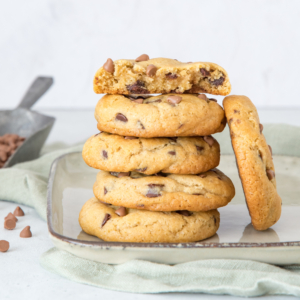

Beschrijving
een leker koekjes recept
Ingrediënten
- 100 gram ongezouten roomboter
- 120 gram lichtbruine basterdsuiker
- 30 gram fijne kristalsuiker
- 1 ei
- 1 tl vanille-extract
- 220 gram bloem
- snuf zout
- 1 tl baking soda
- 100 gram chocolate chips melk of puur
- extra chocolate chips ter decoratie
Instructies
- Doe de boter, basterdsuiker en fijne kristalsuiker in een kom en mix tot een romig geheel.
- Voeg het ei en het vanille-extract toe en mix tot een glad mengsel.
- Voeg het bloem, zout en de baking soda toe en zet de mixer uit zodra de bloem is opgenomen.
- Kneed de chocolate chips door het deeg.
- Laat het deeg minstens 2-3 uur rusten in de koelkast (maar het liefst de hele nacht), verdeel het deeg daarna in 12 gelijke stukken.
- Draai balletjes van de stukjes deeg en leg ze met voldoende tussenruimte op de bakplaat.
- Ik heb altijd 2 bakplaten nodig om alle koeken te bakken.
- Duw nog wat extra stukjes chocolade in de balletjes deeg (zie de TIP voor de twee mogelijke manieren).
- Bak in een voorverwarmde oven van 170 °C (boven- en onderwarmte) in ongeveer 14 minuten goudbruin.
- De koekjes zijn na het bakken nog een beetje zacht.
- Laat ze een paar minuten op de bakplaat afkoelen en verplaats ze daarna naar een rooster waar ze volledig af kunnen koelen.